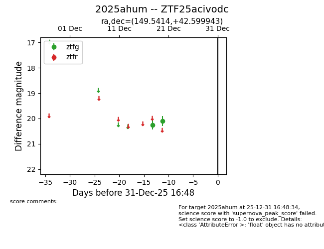
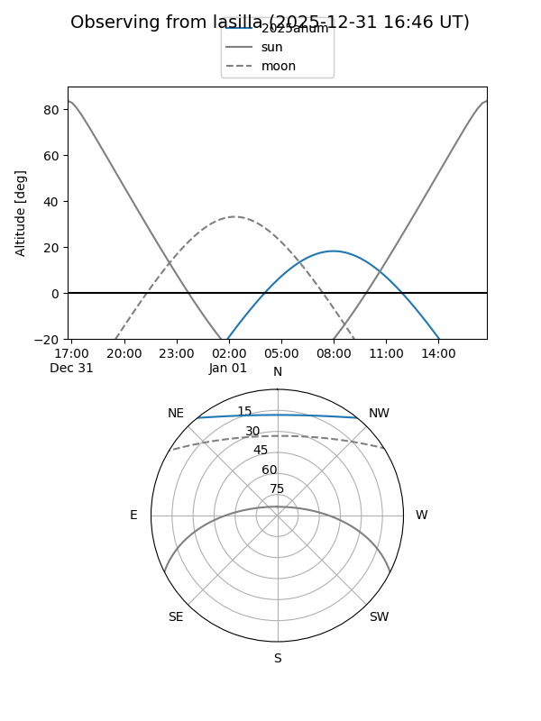
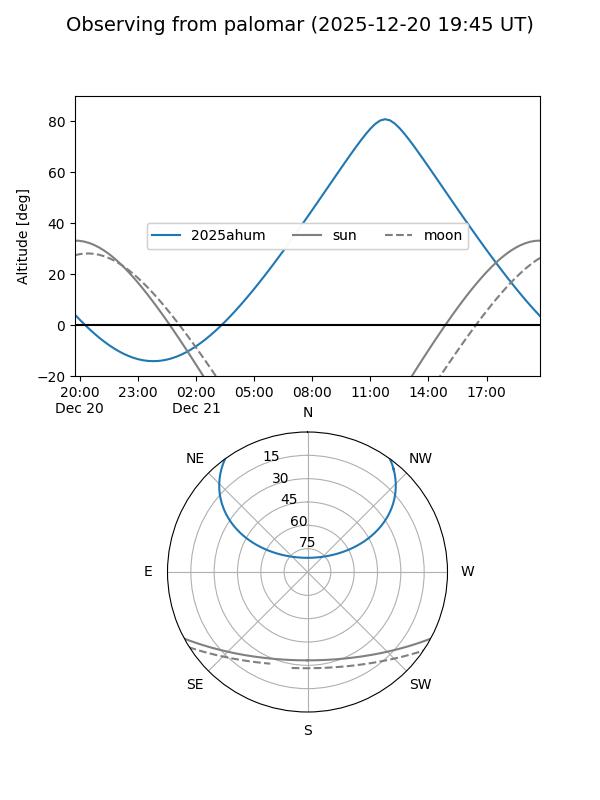

2025ahum
Target 2025ahum at 2025-12-22 14:03
Aliases and brokers:
FINK: fink-portal.org/ZTF25acivodc
Lasair: lasair-ztf.lsst.ac.uk/objects/ZTF25acivodc
ALeRCE: alerce.online/object/ZTF25acivodc
TNS: wis-tns.org/object/2025ahum
YSE: ziggy.ucolick.org/yse/transient_detail/2025ahum
alt names
ZTF25acivodc (ztf,fink_ztf)
2025ahum (tns,yse)
Coordinates:
equatorial (ra, dec) = 149.5414,+42.59994
equatorial (HMS+DMS) = 09:58:09.92,+42:35:59.79
galactic (l, b) = (177.5829,+51.74651)
Flags:
Photometry:
last ztfg=20.10
2 ztfg detections
Lightcurve

Visibility


Additional plots